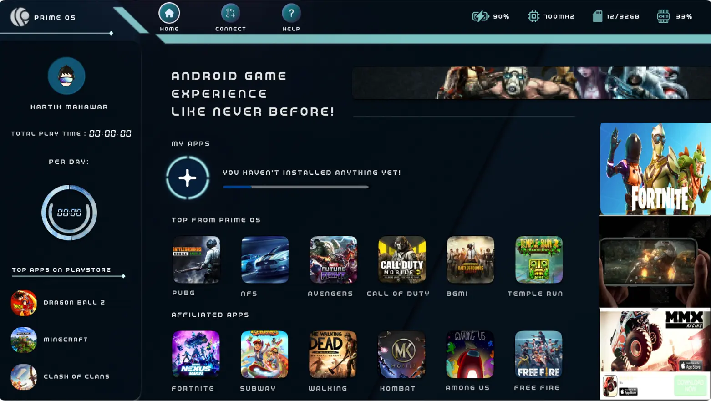

User Interface



Prime Os Game Center is the upcoming product under Floydwiz tech which is a OS based android emulator for PC . It allows users to experience android gaming through their personal computers.
Ch 1: Synchronization of psychology between user and product while keeping user
engaged through raw and high caliber gaming based UI.
Ch 2: Curating all necessary features such as Battery indicator, ram, processor and memory
usage along with feature to connect online and chat with other users.
Ch 3: Introducing recommending feature of top choices (which are affiliated and partnered games)along with top choices from playstore as secondory manual.
Ch 4: Creating non disturbing ad space; precisely, ad space should feel like blended feature rather than irritating pop up and redirecting.
I contributed as UX/UI designer for this product which includes entire process of research and analysis, brainstorming and interaction with clients. Moreover, I had emphasized more on user empathy approach by considering client’s perspective and constructive feedback.
To carry out this project with top notch effectiveness and optimal results; lot of analysis and research was required, so in this case; I majorly focused and prioritizing client’s requirement and expectations for which we conducted lot of interaction sessions to find a exact focal point for the process.
As a result, I found out various other attributes and functionalities to be embedded such as required screen resolution, measurements for advertisement sections, chatting window and transitively the online connect feature.
In order to carry out the user empathy approach, user interview plays a vital role in understanding the thought process of user. For this project I’d interviewed roughly 7 candidates of age group 17-24, as because, notably this age group is considered to be the most active in gaming.
Cohersively, this will help in collecting valid user insights to consider for creating the optimal experience.
The aftermath, considerable data after user interviews:
1: According to gaming mind psychology, dark and blended 3d effect will enhance the experience and will be able to increase user engegemnet; with respect to the user thought process.
2: Game and system stats are crucial so ‘on-sight’ visibility will optimize the user accessibiity.
After several interactions I managed to find a major requirements and design concepts along with accurate positioning and resolution.
As under the rule of optimal design color psycholgy and principles along with accurate typography hierarchy are the most vital aspects in designing.
Game played
32px
Game played
24px
Game played
16px
Prime OS game center was a successful project as after considering all the real time user insights and defined challenges, we were able to overcome those by implementing the methodological approach; UI of game center is the most intriguing part, as being a gaming based product the interface limits along with optimal experience is a prime factor to be able to stand by its name.
Furthermore, feedback from client was quite promising as all the factors were carried out effectively and development phase was also on par with design.